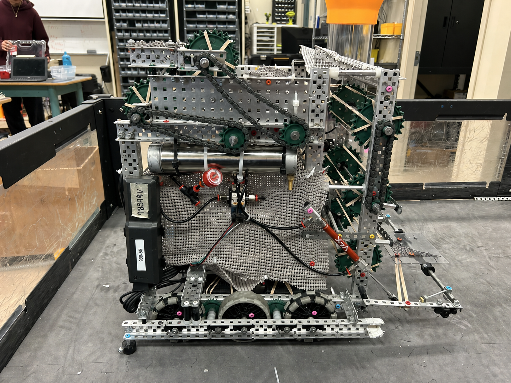
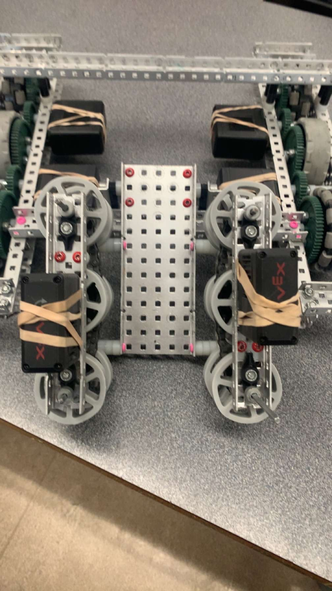
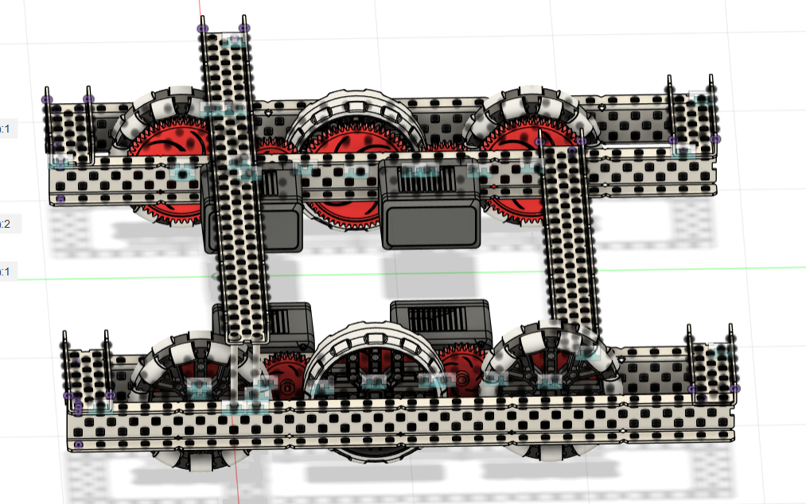

VEX Robotics · 2025–present
VEX Team 98549E.
I’m a builder and scout. I help assemble mechanisms, test them on the field, scout other teams, and document changes in the engineering journal. Below is work from our 2025–2026 season.
VEX Team 98549E · Builder & scout
Mechanism builder, field tester, and scout.
My role combines hands-on construction with evaluation. I work on the drivetrain, goal scraper, intake, outtake, and scoring mechanisms; then I use field tests and scouting notes to help the team decide what to keep, revise, or remove.
- Role
- Builder and scout on VEX team 98549E during the 2025-2026 season
- Testing
- Field-tested and tuned drivetrain parts with teammates
- Iteration
- Helped develop a chain-retention idea, then dropped it when the extra weight was not worth the benefit
- Team result
- After a 2.5-week rebuild, our driver-skills score improved from 19 to 30 points


